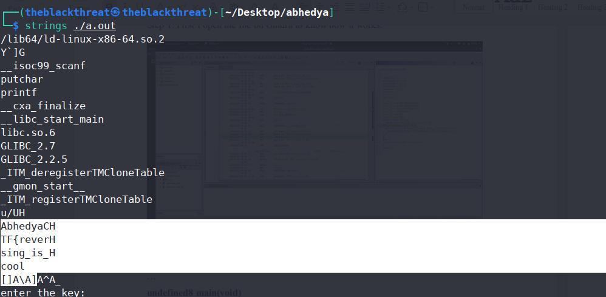
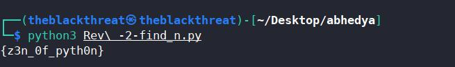

Ths this challenge as the name says that inspect me. and is something about inspect
 In this challenge May be there is XSS vulnerability but here I I injects some scripts
but it won’t woks for the flags.
In this challenge May be there is XSS vulnerability but here I I injects some scripts
but it won’t woks for the flags.
but it didn’t work so I look around to the source file and I found something intersting.
the function for button tag where we can inject our script.
Page source http://164.52.211.11:9001/javas.js
var secretCode = "X01lZWVffQ==";
document.getElementsByTagName('button').onclick=function() {
click();
}
function click() {
document.getElementById("he").innerHTML = "You Can't find me...";
}
 So the secretCode is
So the secretCode is X01lZWVffQ==
It will looks like base64 so i decode it I got the flag
seems that the name is the flag.
Result Flag:
AbhedyaCTF{_Meee_}}
******************************************************************************************************************************************************************
******************************************************************************************************************************************************************
Here i see that the code that is asking for:
```
undefined8 main(void)
{
undefined8 local_38;
undefined8 local_30;
undefined8 local_28;
undefined4 local_20;
undefined local_1c;
int local_14;
int local_10;
int local_c;
local_38 = 0x4361796465686241;
local_30 = 0x72657665727b4654;
local_28 = 0x5f73695f676e6973;
local_20 = 0x6c6f6f63;
local_1c = 0x7d;
local_10 = 0x2687;
printf("enter the key: ");
13}
```
__isoc99_scanf(&DAT_00102014,&local_14);
if (local_10 == local_14) {
for (local_c = 0; local_c < 0x1d; local_c = local_c + 1) {
putchar((int)*(char *)((long)&local_38 + (long)local_c));
}
}
else {
printf("wrong key, try again");
}
return 0;
}
```
The logic is that first the key value should be equal to local_10 and the Input is contain by Local_14 here we can see that (local_10 == local_14) so the key value is
0x2687 in binary and in decimal it will be 2687. but the proper configuration may
not work here and I don’t had much time do.
So i find another way to find the flag the misconfiguration of the code helped me a
lot.
The linux tool stings is so usefull to extract the infromation

```
$ string ./a.out
strings ./a.out
/lib64/ld-linux-x86-64.so.2
Y`]G
__isoc99_scanf
putchar
printf
__cxa_finalize
__libc_start_main
libc.so.6
14GLIBC_2.7
GLIBC_2.2.5
_ITM_deregisterTMCloneTable
__gmon_start__
_ITM_registerTMCloneTable
u/UH
AbhedyaCH
TF{reverH
sing_is_H
cool
```
here is the
Flag: AbhedyaCTF{reversing_is_cool}
******************************************************************************************************************************************************************
******************************************************************************************************************************************************************
2. Decrypt Language: https://drive.google.com/file/d/******************************/view?usp=sharing In this chellenge I got a python script that supports the 3 version of pyhton so it is one kind of a algorithm that can decode the number so string of order n ords= [73, 72, 1, 92, 109, 2, 84, 109, 66, 75, 70, 90, 2, 92, 79]``` import sys if sys.version_info.major == 2: print("You are running Python 2, which is no longer supported. Please update to Python 3.") ords = [73, 72, 1, 92, 109, 2, 84, 109, 66, 75, 70, 90, 2, 92, 79] print("".join(chr(o ^ 0xn) for o in ords)) ```I need to change the code because there is no order of n specified but the strings can major of n=32 Modified code``` import sys if sys.version_info.major == 2: print("You are running Python 2, which is no longer supported. Please update to Python 3.") ords = [73, 72, 1, 92, 109, 2, 84, 109, 66, 75, 70, 90, 2, 92, 79] print("".join(chr(o ^ 0x32) for o in ords))Again run the script using python3``` $python3 Rev\ -2-find_n.py {z3n_0f_pyth0n} ``` Result : Flag: AbhedyaCTF{z3n_0f_pyth0n} ****************************************************************************************************************************************************************** ******************************************************************************************************************************************************************